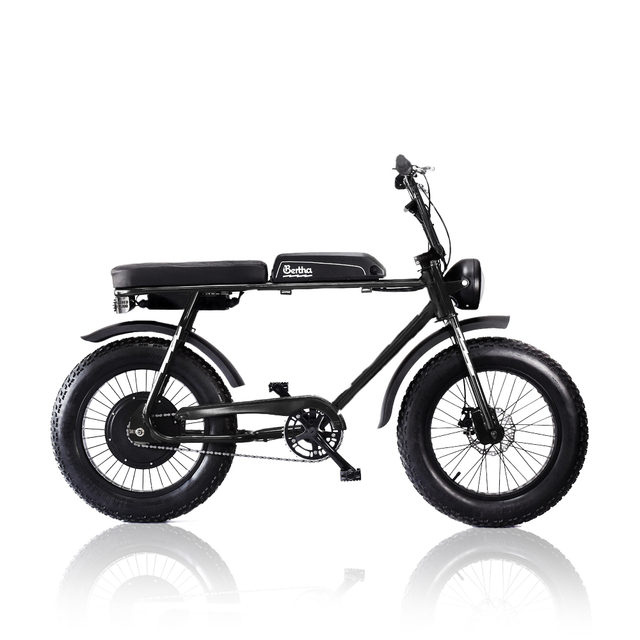

Ventajas de la ebike

Caracteristicas: Ficha Técnica: Dimensiones: 1,74m largo x 1,22m alto x 0,70m ancho Peso: 35kg Motor: Hub Trasero 500w, 48v Brushless Batería: De Iones de Litio 13, 4ah Tipo de asistencia: Full Electric + Asistencia al pedaleo Velocidad Máx: 50kms/h (según restricciones) Autonomía: 30km - 40km (según el uso) Frenos: A disco hidráulicos Palancas de freno: Con sensores de corte motor Cubiertas: 20x4 Cámaras: Vulcanizadas con pico Schrader (de auto) Llantas: De aluminio doble pared 36 rayos. Display: Compacto digital con iluminación, velocímetro, odómetro, cuenta kilómetros e indicador de carga con niveles de asistencia de pedaleo
Precio

Caracteristicas:
Precio
Caracteristicas:
Precio